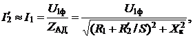
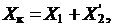
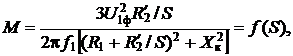
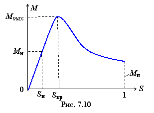
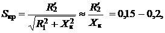
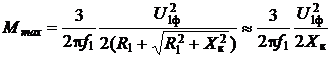
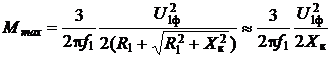
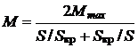
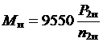
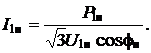

Электромагнитный момент, развиваемый
ротором, определяется основным магнитным потоком АД и током ротора: М = CМФmpI2cosΨ2,
где CМ − коэффициент, определяемый конструктивными особенностями АД; Ψ2 − угол
сдвига фаз между ЭДС Е2 и током I2 ротора.
Однако для практического использования эта формула мало пригодна. Из курса механики известна зависимость между вращающим моментом и полезной мощностью на валу двигателя:
M = P2 / ω2, где ω2 = 2πn2 / 60 – угловая частота вращения ротора.
Пренебрегая потерями в стали ротора (см. рис. 7.9), запишем .<
Учитывая, что и , определим потери в меди ротора, т.е.  .
.
Умножив и разделив правую часть уравнения на ω1, получим
. Откуда
Обращаясь к схеме замещения (см. рис. 7.7) и пренебрегая поперечной ветвью намагничивания, имеем:
  (7.9)
т.е. момент вращения АД пропорционален квадрату фазного напряжения сети и является функцией скольжения S.
Пусковой момент (S = 1, см. рис. 7.10)

Отношение пускового момента к номинальному моменту асинхронного двигателя β = Mп/Mн = 0,9...1,3, а отношение пускового тока к номинальному
α = Iп/Iн = 4...7.
Критическое скольжение, при котором М = Мmах
α = Iп/Iн = 4...7.
Критическое скольжение, при котором М = Мmах
.
При этом


Отношение максимального момента к номинальному моменту двигателя Отношение пускового момента к номинальному моменту асинхронного двигателя λ = Mmax/Mн = 1,9...2,5.
Для построения графика М = f(S) при 0 ≤ S ≤ Sкр удобна формула Клосса: , (7.10)
где
Используя каталожные данные АД:, определяют номинальный момент Mн, номинальную мощность Р1н и номинальный ток I1н, потребляемые из сети, по следующим формулам:
 (Р2н в кВт), ,  (7.11)